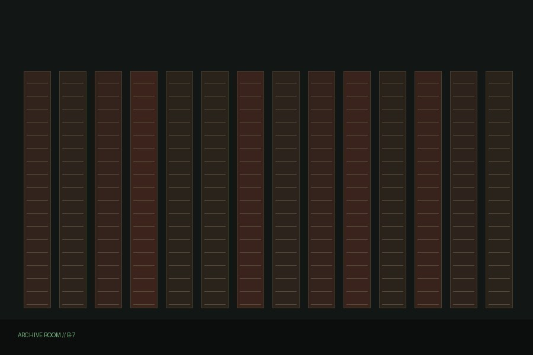

You found the room the crawlers can't enter.
I photographed the last place I worked. A photo is never just a photo. Save it and look closer, not at the pixels but at what the file says about itself.
